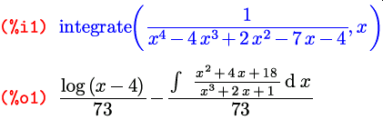
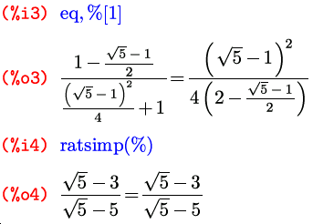
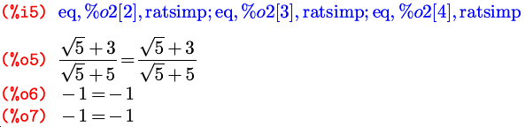
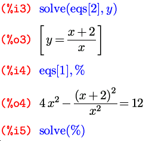
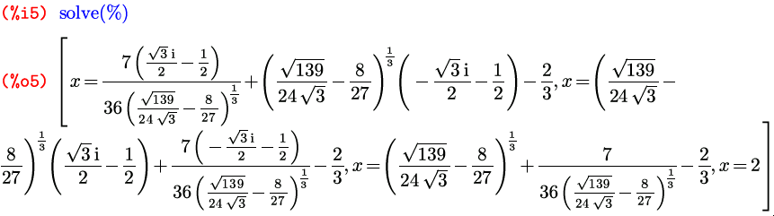
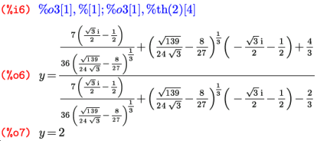
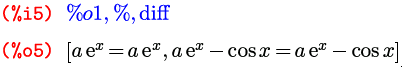

Maxima
Система компьютерной алгебры
Система компьютерной алгебры
Впервые было опубликовано в «Linux Format» №10 (84), октябрь 2006 г.
Из встроенного функционала Maxima в первую очередь стоит обратить внимание на несколько групп функций: работу с пределами, дифференцирование, интегрирование, поиск решений уравнений — как «просто», так и дифференциальных.
Собственно полноценных функций для нахождения предела существует в
Maxima аж одна. Но зато какая! Она может принимать три различных
варианта списка аргументов, и кроме того, на ее действие влияют еще и
три флага. Но давайте по порядку. Зовут эту функции вполне
соответственно ее действию: limit; и в самом стандартном
варианте ее вызов выглядит
как limit(выражение, переменная, точка), то есть то, что
в математической записи выглядит как
limx→a f(x), в
контексте Maxima запишется как limit(f(x), x, a):
Maxima может искать пределы не только в конечных точках, но и на
бесконечности. Среди стандартных обозначений программы существуют
универсальные названия для разных бесконечностей: плюс-бесконечность
записывается через inf (от слова infinity, как
нетрудно догадаться), минус-бесконечность — через minf
(от minus infinity); для комплексных чисел бесконечность, как
известно, одна, и она (комплексная бесконечность) обозначается полным
словом infinity. При работе с пределами все три
обозначения могут как использоваться при вводе, так и возникать в виде
найденного значения предела; отдельно здесь надо отметить один момент
касательно работы с интерфейсом к Maxima в редакторе TeXmacs:
символы inf и minf при выводе здесь
отображаются в своей традиционной математической нотации, то есть как
∞ и −∞; символ вместо inf можно, кроме того, использовать
еще и при вводе.
Второй вариант вызова функции limit() — это
расширенная версия
первого: limit(выражение, переменная, точка, направление),
для поиска односторонних пределов. Для предела справа в качестве
«направления» указывается plus, для предела
слева — minus:
Пределы справа и слева еще иногда называют соответственно пределами сверху и снизу. Хотя правильнее в таком случае говорить полностью: «предел при x, стремящемся к a сверху», в том числе чтобы не создавать путаницы с верхним и нижним пределами, которые суть совершенно другое.
Кроме упомянутых выше бесконечностей, на выходе возможно появление
и еще двух обозначений, на случай, если заданный предел не
существует: ind (от
слова indefinite — неопределенный)
и und (от слова undefined — опять
же неопределенный). В документации первое из этих обозначений
описано как indefinite but bounded (не определен, но
ограничен), что дает предположить, что функция, не имеющая
предела, при этом ограничена либо в окрестности предельной точки, либо
на всей прямой. Какое из этих предположений имелось в виду, мне так и
не удалось понять, потому как на практике ни одно из них не
соответствует действительности. Вывода ind мне не удалось
добиться ни на одной функции, радикально отличающейся от
«канонической» (в том смысле, что фигурирующей в стандартном примере
из комплекта) функции sin(1/x).
Здесь все правильно, tan(1/x) не ограничена в
окрестности нуля. А вот дальше начинаются чудеса:
Как видите, первая функция имеет конечные односторонние пределы в нуле, а вторая ограничена вообще на всей оси — и тем не менее… Но это, думаю, не столь критично: главное, что наличие любого из этих символов в качестве вывода дает нам понять, что искомого предела не существует.
Функция limit() в третьем
варианте — limit(выражение) — предназначена уже не для
поиска собственно пределов, а для упрощения выражений, содержащих
символы inf и minf:
Выражения такого рода могут возникать, к примеру, при подстановках в формулы результатов вычисления каких-то других пределов или интегралов.
Такая способность — принимать различные списки аргументов — не
является в Maxima чем-то особенным; она свойственна очень многим
встроенным функциям, как и различное действие в зависимости от
значений разнообразных переключателей. Это достаточно удобно: не нужно
запоминать много разных имен функций (для поиска пределов, к примеру,
используется исключительно функция limit); для вычисления
производных, в том числе и частных, — функция diff (с
которой мы уже бегло ознакомились в первой статье и сейчас продолжим
это знакомство); для нахождения интегралов, как определенных, так и
неопределенных — функция integrate (с которой мы тоже сегодня
познакомимся). Имена наиболее часто используемых функций запомнить
несложно, а о дополнительных ключах или флагах, в случае чего, можно
прочитать во встроенной справке,
набрав ? имя-функции.
Об этих самых ключах к функции limit и осталось рассказать. Первый
ключ называется lhospitallim и задает максимальное
количество применений правила Лопиталя; название ключа и происходит от
фамилии ученого, давшей название самому правилу, которая в оригинале
пишется как L’Hospital. Напомню, правило это гласит, что в
случае неопределенности вида 0/0 или можно продифференцировать
числитель и знаменатель — и предел от этого не изменится. Ограничитель
количества применений этого правила нужен для того, чтобы избежать
зацикливаний, которые могут случиться для бесконечно дифференцируемых
функций, у которых в данной точке равны нулю либо бесконечности все
производные. По умолчанию значение lhospitallim равно
четырем, и мне не удалось сходу придумать пример, когда этого не
хватает — ведь функция поиска предела использует не только правило
Лопиталя, но и другие соотношения; и для всех заданных мною
соотношений двух функций с корнями выше четвертого порядка в искомой
точке предел был успешно найден и при умолчательном значении.
Второй ключ к функции limit — это
флаг limsubst, который, будучи выставлен
в true, позволяет этой функции производить подстановки
внутрь неизвестных выражений. По умолчанию этот флаг
равен false, что исключает ошибки вроде такой:
И, наконец, последний дополнительный параметр — еще один флаг, по
имени tlimswitch. По умолчанию он тоже выключен, а если
его включить, функция limit будет, при невозможности
найти предел другими способами, пытаться его найти путем разложения
подпредельной функции в ряд Тейлора в окрестности заданной точки:
Но в случае поиска односторонних пределов, в тех точках, где они не
равны между собой, то есть полного предела не существует, этим флагом
нужно пользоваться с осторожностью: при его включении
функция limit может вернуть в качестве полного предела
один из односторонних:
Реально у этой функции в точке ноль только предел справа равен единице; а предел слева — нулю.
И последнее: почему я употребил в начале по отношению к
функции limit() слово «полноценная». Потому что кроме нее
существует еще одна «недофункция» — tlimit(); она
представляет собой фактически просто-напросто вызов самой
функции limit() с поднятым
флагом tlimswitch, то есть пытается при необходимости
разложить «подпредельную» функцию в ряд Тейлора вне зависимости от
реального значения этого флага. Другими словами
вызов tlimit(аргументы) полностью аналогичен
записи limit(аргументы), tlimswitch:true;
только чуть короче. И аргументы она может принимать точно такие
же.
О функции diff я кое-что уже рассказывал в первой
статье, и здесь это «кое-что» только напомню. В двух упомянутых тогда
вариантах вызова эта функция принимала один либо два аргумента. С
двумя, diff(выражение, переменная), она возвращает
производную от «выражения» по заданной переменной; с
одним, diff(выражение) — полный дифференциал заданного
выражения. Другими словами, запись diff(f, x) равнозначна
математическому обозначению df/dx,
а diff(f) — df.
Но это еще не все. Кроме одного либо двух, эта функция может также
принимать любое нечетное число агрументов
вида diff(выражение, переменная, порядок, переменная, порядок, …)
и возвращает при этом производную либо смешанную частную производную
от выражения заданных порядков по заданным переменным. К
примеру, diff(f, x, 3) означает
d3f/dx3,
а diff(f, x, 1, y, 2, z, 1) —
d4f/dxdy2dz. Единственный
флаг, имеющий прямое отношение к самой функции diff — это
флаг derivabbrev, который влияет на отображение производных в ячейках
вывода Maxima. По умолчанию он равен false, и производные
обозначаются в виде дробей с буквой d; если же его выставить
в true, производные будут отображаться в сокращенном
виде, с переменными дифференцирования записанными в виде индексов:
Кроме того, функция diff используется еще и для
обозначения производных в дифференциальных уравнениях. Но об этом чуть
позже, а сейчас перейдем к интегрированию.
Основная функция интегрирования называется, как я уже
говорил, integrate и имеет два варианта вызова: для
нахождения неопределенного и определенного интегралов. Первый выглядит
как integrate(выражение, переменная), второй —
как integrate(выражение, переменная, нижний-предел, верхний-предел):
Вы, наверное, обратили внимание еще на один момент в
ячейках %i4–%o4. Когда в выражении
используется какой-либо независимый символ, результат, вообще говоря,
может зависеть от значения этого символа. Если при этом о возможных
значениях символа ничего не известно, то Maxima задаст вам один или
несколько вопросов об этом значении, и решение будет искать в
зависимости от ваших ответов на них. Так, в этом примере значение
определенного интеграла напрямую зависит от знака параметра a:
Кроме обычных определенных интегралов Maxima умеет искать также и
несобственные интегралы, то есть такие, у которых неограничена либо
область интегрирования, либо подынтегральная функция; и делается это
все той же функцией integrate:
В случае, если искомый интеграл не сходится, будет выдано сообщение об ошибке, говорящее о том, что интеграл расходящийся:
В случае, если интеграл не может быть найден, он либо целиком возвращается в несовершенном виде, либо упрощается частично и на выходе получается некоторая формула, включающая в несовершенном виде интеграл той части подынтегрального выражения, которую проинтегрировать не удалось:
Кроме функций diff и integrate, в Maxima
есть еще много разнообразных возможностей, связанных с производными и
интегралами, в частности, функции для численного расчета значений
определенных интегралов, а также инструменты, применимые при работе с
дифференциальными и интегральными уравнениями. И разнообразны они
настолько, что для того, чтобы рассмотреть подробно и с примерами их
все, не хватило бы всего этого цикла. А более тезисно, хотя и на
английском языке, они описаны в документации. Посему с этой темой на
этом прекращаем и движемся дальше.
А дальше мы рассмотрим уравнения и их системы, и даже не столько
рассмотрим, сколько порешим… то есть, конечно, порешаем. Уравнения и
системы уравнений решаются в Maxima тоже одной и той же функцией, и
тоже уже вам слегка знакомой по первой статье: это
функция solve. Но прежде чем рассмотреть ее подробнее,
нужно сказать пару слов о списках, или векторах, в Maxima; поскольку
именно в виде списков solve возвращает корни, да и принимает параметры
в случае решения системы уравнений, а не одного уравнения.
Синтаксис списков в Maxima весьма прост; это перечисление элементов
в квадратных
скобках: [элемент1, элемент2, …, элементN]. Особенность —
не в синтаксисе. Основное достоинство Maximaльных списков в том, что
их элементами могут быть совершенно любые выражения: символы,
арифметические выражения, вызовы функций, присвоения, уравнения,
другие списки… Додумать можете сами. Поэтому списки и во встроенных
функциях применяются достаточно широко. Функция solve в
своем простейшем варианте, для решения одиночного уравнения, в
качестве аргументов никаких списков, напомню, не принимает (а
принимает либо уравнение и символ, относительно которого его надо
решать, либо только уравнение, если символ в нем всего один). А вот в
качестве результата она уже и в таком варианте возвращает список,
состоящий из всех корней заданного уравнения:
Как видите, функция solve находит все комплексные
корни уравнения, а не только действительные.
К элементу списка можно обратиться с помощью тех же квадратных скобок, указав в них номер элемента после имени списка. Напомню, что равенство, переданное в качестве дополнительного параметра функции ev, означает подстановку переменной в вычисляемое выражение. Вот так мы можем осуществить проверку решения, подставив корень из выданного списка в исходное уравнение:
Точно таким же образом можно обратиться и к любому другому элементу списка:
Вообще говоря, в качестве первого аргумента
функции solve можно задавать не только уравнение, а
вообще любое выражение. При этом «корни выражения» (не являющегося
уравнением) ищутся в том самом смысле, в каком эта фраза понимается в
математике: корни выражения — это те значения переменной, на которых
выражение обращается в ноль. Возможность такой записи позволяет, к
примеру, легко найти критические точки любой непрерывной функции (а
заодно и вычислить значения функции в этих точках):
В этом примере есть еще два важных момента. Первый —
функция %th(). Она, как видно из контекста, вызывается
как %th(n) и возвращает n-ю с конца ячейку
вывода. Это, так же как и обозначения % и _,
удобно, чтобы не обращать внимания на номера ячеек, и кроме того,
применимо в командных файлах Maxima, которые могут загружаться в том
числе и прямо из интерактивной сессии (с помощью
функции load) — и тогда просто заранее неизвестно,
начиная с какой ячейки данный файл загружен. И второй момент: здесь
проиллюстрировано, что в Maxima операция индексирования списка
доступна не только по отношению к именам переменных, но и к вызовам
функций; другими словами, если функция возвращает список значений, мы
можем выбрать одно конкретное из них, написав его номер в квадратных
скобках прямо после вызова функции.
Вернемся к функции solve. А именно, перейдем теперь к
решению систем уравнений. Для этого существует такой вариант
записи: solve([уравнение1, уравнение2, …],
[переменная1, переменная2, …]); либо сокращенный, аналогично
варианту для одиночного уравнения: если количество уравнений и
количество неизвестных равны, список неизвестных можно не
писать: solve([уравнение1, уравнение2 …]) (не забудьте
квадратные скобки, иначе Maxima примет его за вариант с одним
уравнением).
Здесь возвращается список из нескольких списков, каждый из которых
соответствует одному решению системы. В качестве подстановок можно
использовать как такие списки целиком (например, в данном
контексте, %o1[1]), так и отдельные их элементы
(например, %o1[1][1]).
В случае, когда уравнений меньше, чем
неизвестных, solve поступит точно так же, как и в случае
одного уравнения с несколькими символами: все неуказанные будет
воспринимать как параметры:
Если solve не находит точных решений, она может, как
и integrate, вернуть уравнение или систему уравнений в
некотором упрощенном виде, а может и самостоятельно попытаться решить
систему численно:
В таком случае, если вам все же нужны точные значения корней (в аналитической записи), либо если они не найдены даже в числах, можно попробовать решить уравнения по очереди, выражая одно неизвестное через другое:
И подставляя в оставшиеся уравнения:
Теперь можем подставить обратно — и найти значения второй неизвестной, например, для первого и последнего корней из последнего списка:
Функция solve имеет довольно большое количество
различных переключателей, из которых может пригодиться в своем
не-умолчательном значении в первую очередь
один: solveradcan. Умолчание здесь
равно false, а выставив этот флаг в true, мы
заставим solve, помимо его умолчательного поведения,
применять radcan — функцию по упрощению показательных,
логарифмических и степенных (с рациональными степенями) функций. Это
делает работу функции solve более медленной (потому по
умолчанию этот режим и выключен), но в некоторых случаях может помочь
разрешить проблемы, которые без этого ключа приведут к невозможности
найти точное решение.
Помимо «просто» уравнений, Maxima позволяет также решать и
обыкновенные дифференциальные уравнения первого и второго
порядка. Функций, непосредственно занимающихся решением таких
уравнений, существует две. Первая из них занимается поиском частных
решений линейных дифференциальных уравнений и систем таких уравнений;
зовут ее desolve, от слов differential equation
solve. Эта функция принимает два аргумента, первый из которых —
уравнение либо список уравнений, а второй — соответственно одна
переменная или список переменных. Если не заданы значения функций
и/или их производных в нуле, то в найденном решении они просто
отображаются в виде f(0) или
задать эти значения позволяет
функция atvalue(выражение, переменная = точка, значение);
то есть, в данном случае atvalue(f(x), x=0, значение)
или atvalue('diff(f(x)), x=0, значение). Производные в
уравнениях и системах, решаемых с помощью этой функции, должны быть
записаны непременно в виде 'diff(f(x), x), а не
просто 'diff(f, x), а сами функции, соответственно, тоже
в виде f(x), а не f — нужно
продемонстрировать зависимость функции от ее аргумента.
И конечно же, точно так же как для обычных уравнений и систем, здесь мы тоже можем проверить решение с помощью подстановки, но только надо еще дополнительно задать принудительное вычисление производных, так как в уравнениях они фигурируют в несовершенной форме:
Вторая функция из этой группы называется ode2 и
предназначена она для решения обыкновенных дифференциальных уравнений
первого и второго порядка; ее название происходит от
фразы ordinary differential equations of 1st or 2nd
order. Пишется она
так: ode2(уравнение, зависимая-переменная, независимая-переменная). Здесь
уже независимая переменная указывается в списке параметров функции
явно, и потому обозначения вида y(x) не нужны: и функция,
и переменная обозначаются просто одиночными буквами. Также в отличие
от предыдущей функции, ode2 ищет не частное, а общее
решение. Произвольная константа в решении уравнения первого порядка
обозначена через %c; в решении уравнения второго порядка
таких констант, естественно, две, и обозначаются они
как %k1 и %k2.
В дополнение к функции ode2 существуют три функции для
поиска частных решений на основе полученных общих. Иначе говоря, эти
функции, получая конкретные условия относительно значения
функции-решения в заданной точке, находят исходя из этих значений
соответствующие им величины интегральных констант. Одна из этих
функций предназначена для обработки решения дифференциального
уравнения первого порядка. Она называется ic1 (i
от initial value — начальное значение; c
от constant — константа; 1
от 1st order — первого порядка) и
принимает три аргумента: первый — само решение, в том виде, в котором
его находит функция ode2; второй — значение независимой
переменной (x-координаты), третий — значение функции
(зависимой переменной, у) при этом значении x и
возвращает частное решение, проходящее через точку с заданными
координатами (x, y):
И две функции работают с решениями уравнений второго порядка. Так
как в общем решении уравнения второго порядка фигурируют две
независимые константы, то эти функции задают уже по два условия для
поиска частного решения. Первая функция выглядит
как ic2(общее решение, x, функция-в-точке-x, производная-в-точке-x). Расшифровка
названия аналогична предыдущей функции. Действует тоже аналогично ей,
а в качестве второго условия задает значение производной в той же
заданной точке:
И последняя функция называется bc2 (b
от boundary value — граничное значение; а дальше все как в
предыдущей). Ее аргументы: первым, как и в двух остальных вариантах,
идет само общее решение, возвращенное функцией ode2;
после него идут две пары
значений: x 0, y0, x1, y1,
задающие две точки, через которые должен проходить график
функции-решения:
Касательно дифференциальных уравнений все этими функциями и заканчивается, никаких дополнительных ключей к ним не предназначено.
В следующий раз мы поговорим о средствах построения графиков функций и о средствах автоматизации: условных операторах, циклах и управляющих условиях, налагаемых на различные символы и выражения.